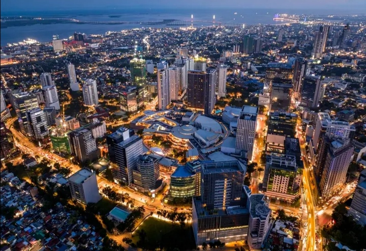
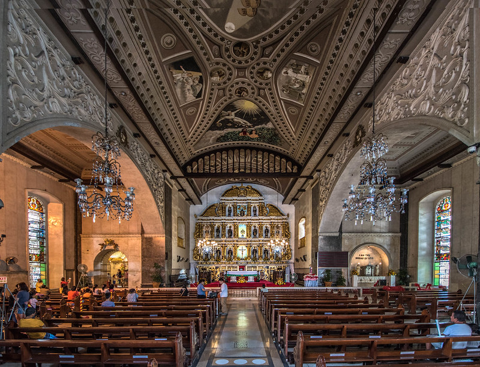
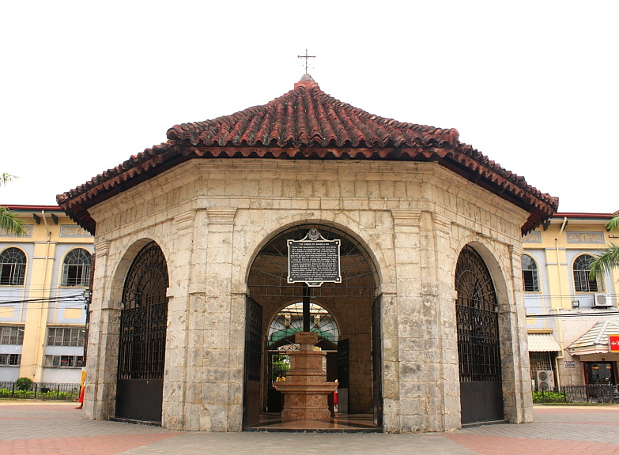

Cebu City, Cebu

Cebu, often referred to as the "Queen City of the South," is one of the most vibrant and historically significant provinces in the Philippines. Located in the central Visayas region, Cebu serves as a major domestic and international hub, seamlessly blending deep colonial history, bustling urban development, and world-class natural wonders.
Basilica Minore del Santo Niño de Cebú, Cebu

The Basilica Minore del Santo Niño de Cebú, commonly known as the Santo Niño Church, is a 16th-century minor basilica located in Cebu City, Philippines. Founded in 1565 by Spanish explorers, it is the oldest Roman Catholic church in the country and stands on the exact spot where the miraculous image of the Santo Niño (Child Jesus) was found.
Magellan's Cross, Cebu

Magellan's Cross is one of the most famous and historically significant landmarks in the Philippines. Located in Cebu City, right next to the historic Basilica del Santo Niño on Magallanes Street, it symbolizes the introduction of Roman Catholicism to the archipelago and marks the birth of Christianity in the country.